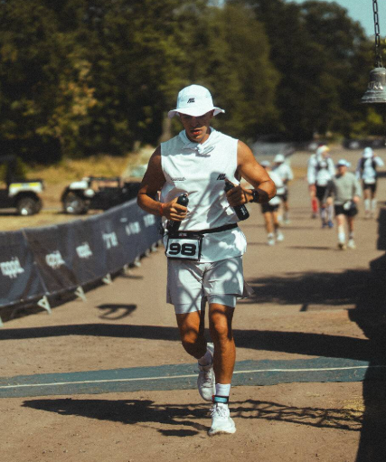

Ayyoub "Ello" El Osrouti is a German ultrarunner who gained global attention for running 93 straight hours and covering about 623.7 kilometers at the Last Soul Ultra in August 2026. Who is Ayyoub "Ello" El Osrouti? • He is an endurance athlete based near Düsseldorf, Germany. • He specializes in extreme endurance events and backyard ultra races. • He was 27 years old during his viral performance in 2026